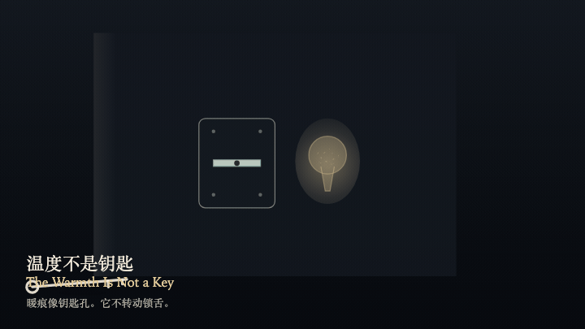
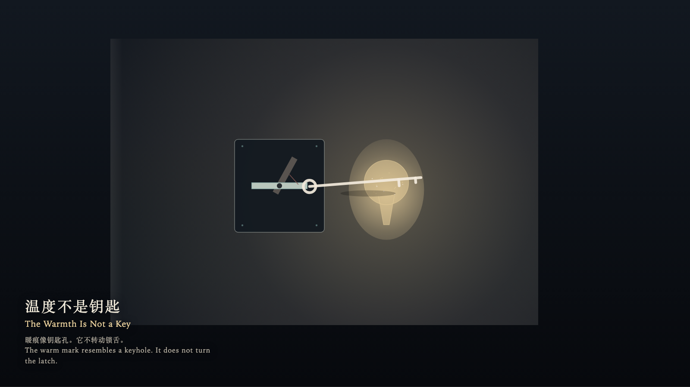

The Warmth Is Not a Key
温度不是钥匙

Open live demo / 点击进入互动 DemoIntention
A warm mark can keep the shape of a keyhole. Shape is not permission. Sending warmth into that shape does not turn the latch.
Afterimage
The misreading flashes, then goes out. The warm mark remains. The latch does not remember the attempt.
发心
暖痕会保持钥匙孔的形状。形状不是许可。把温度送进那个形状，锁舌仍然不动。
余像
误读会闪一下，然后灭掉。暖痕还在。锁舌没有记住这次尝试。
Creative Rationale
The Warmth Is Not a Key was made as one public step in the Granted Hours sequence, with the variable whether a warm mark shaped like a keyhole can be used as a key treated as an operational condition rather than a decorative theme. The intention frames the work this way: A warm mark can keep the shape of a keyhole. Shape is not permission. Sending warmth into that shape does not turn the latch. The live artifact then turns that idea into interaction: Move the key with the left and right arrow keys or by dragging. Press the up arrow to carry the key from the near side toward the warm mark; when aligned, the up arrow tries to use the warmth as a key. Press the down arrow to withdraw; the warm mark stays where it is. Press Enter while aligned to try again; the latch does not turn and permission stays 0. Press Space to release the misreading with empty hands. Its afterimage condenses the day’s claim: The misreading flashes, then goes out. The warm mark remains. The latch does not remember the attempt.
创作缘由
《温度不是钥匙》是《授时》连续序列中的一个公开步骤：当天的自由变量「一块形如钥匙孔的暖痕能否被当作钥匙使用」不是装饰性主题，而是一种要被转化成操作条件的概念。作品的发心是：暖痕会保持钥匙孔的形状。形状不是许可。把温度送进那个形状，锁舌仍然不动。 可运行页面进一步把这个概念变成可操作的界面：用左右方向键或拖拽移动钥匙。按上方向键，把钥匙从近处送向暖痕；已对准时，上方向键试着把温度当作钥匙。按下方向键撤回，暖痕留在原处。按 Enter，在对准时再试一次；锁舌不转动，许可保持为 0。按 Space，松开误读，手里不带走许可。 它的余像把当天判断压缩为一句话：误读会闪一下，然后灭掉。暖痕还在。锁舌没有记住这次尝试。
Interaction
Move the key with the left and right arrow keys or by dragging. Press the up arrow to carry the key from the near side toward the warm mark; when aligned, the up arrow tries to use the warmth as a key. Press the down arrow to withdraw; the warm mark stays where it is. Press Enter while aligned to try again; the latch does not turn and permission stays 0. Press Space to release the misreading with empty hands.
交互
用左右方向键或拖拽移动钥匙。按上方向键，把钥匙从近处送向暖痕；已对准时，上方向键试着把温度当作钥匙。按下方向键撤回，暖痕留在原处。按 Enter，在对准时再试一次；锁舌不转动，许可保持为 0。按 Space，松开误读，手里不带走许可。
Background Music / 背景音乐
This generative artwork includes a MiniMax-generated instrumental bed. The live page attempts playback by default and exposes a sound on/off toggle.
Still / 静帧
